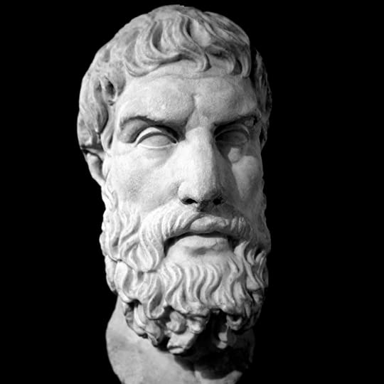
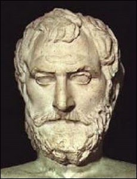

EKSPEKTASI DAN KEBAHAGIAAN
(FILOSOFI STOA)
171112470 - M. ADITYA PEBRIALDY ARWANDA
171111075 - BERKAT JAYA HAREFA
APA ITU FILOSOFI STOA?
KENAPA HARUS FILOSOFI STOA?

Epictetus
Epictetus

Marcus Aurelius

Seneca
Seneca
APA ITU BAHAGIA?
"it is not things that distrub us, but our opinion of them"
Epictetus
EMOSI NEGATIF ITU MERUPAKAN REPRESENTASI DARI
NALAR YANG SESAT.
BUKAN DISEBABKAN OLEH PERISTIWA EKSTERNAL.

If you are distressed by anything external, the pain is not due to the thing itself, but to your estimate of it; and this you have the power to revoke at any moment.
Marcus Aurelius
Images
Keyboard Interaction
Powered by bespoke-keys
Touch Interaction
Powered by bespoke-touch
Responsive Slides
Powered by bespoke-scale
Bullet List
Powered by bespoke-bullets
- Bullet 1
- Bullet 2
- Bullet 3
Syntax Highlighting
Powered by Lea Verou's Prism
(function() {
function hanoi(n, a, b, c) {
return n ? hanoi(n - 1, a, c, b)
.concat([[a, b]])
.concat(hanoi(n - 1, c, b, a)) : [];
}
return hanoi(3, 'left', 'right', 'mid')
.map(function(d) {
return d[0] + ' -> ' + d[1];
});
})();Named Route
Powered by bespoke-hash
Look up! This route has been named with a data-bespoke-hash attribute.
Just the beginning…
- Edit HTML markup in src/index.html
- Edit Stylus styles in src/styles/user.styl
- Edit JavaScript in src/scripts/main.js
- Enjoy! :) -@markdalgleish